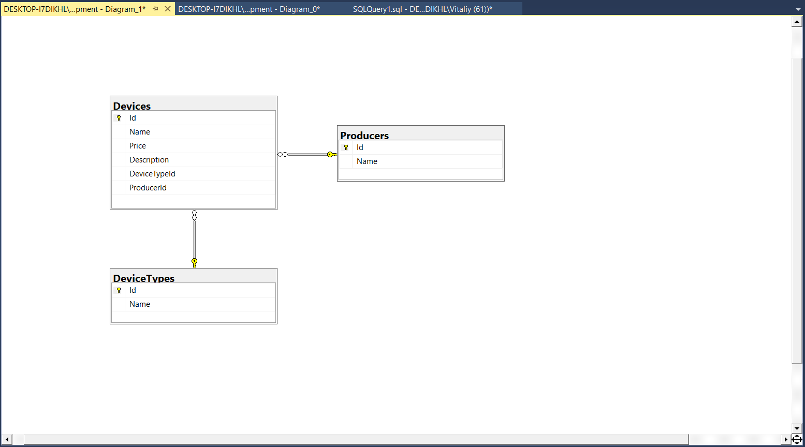

Датологічна модель. Опис моделі. Зв'язки між таблицями
Індивідуальне завдання
Винник Віталій :
3 варіант
Даталогічна модель

Перелік сутностей та їх атрибутів
Producer - сутність, що представляє власне виробника комп'ютерної техніки.
Атрибути : Id, Name.DeviceType - сутність, що представляє власне тип/категорію комп'ютерної техніки.
Атрибути : Id, Name.Device - сутність, що представляє власне одиницю комп'ютерної техніки.
Атрибути : Id, Name, Price, Description.
Зв'язки :
Device - DeviseType : Багато - ОдногоDevice - Producer : Багато - Одного
Зозулюк Віктор :
6 варіант
Даталогічна модель

Перелік сутностей та їх атрибутів
Потяг - сутність представлення назви та класу потяга.
Атрибути : код, ІД класу.Клас - сутність представлення назв класів таких, як інтерсіті, інтерсіті+, тощо.
Атрибути : ІД, назва.Вагон - сутність представлення типів вагонів, кількості місць у вагоні, та вартості одного місця.
Атрибути : ІД, тип, загальна кількість місць, вартість місця.Вагон для потяга - асоціативна таблиця представлення належності вагона до потяга, зокрема скільки у даному вагоні даного потяга продано місць.
Атрибути : ІД вагона, код потяга, кількість проданих місць.Маршут - сутність представлення сукупності станцій, з датою відправлення та прибуття потяга на даному маршуті.
Атрибути : код, дата відправлення, дата прибуття.Станція - сутність представлення певного об'єкта транспортної сфери, що має на увазі збереження даних про розташування, найменування, тощо.
Атрибути : ІД, назва, розташування (країна), рівень маштабності (місто/містечко або смт/село).Поїзд на маршуті - асоціативна таблиця представлення належності потяга до маршуту.
Атрибути : код потяга, ІД маршруту.Станція на маршуті - асоціативна таблиця представлення належності станції до маршуту.
Атрибути : ІД станції, ІД маршруту, черга станції на маршруті.
Зв'язки :
Клас - Потяг : Багато - ОдногоПотяг - Потяг на маршруті : Багато - ОдногоМаршрут - Потяг на маршруті : Багато - ОдногоСтанція - Станція на маршруті : Багато - ОдногоМаршрут - Станція на маршруті : Багато - ОдногоВагон - Вагон в поїзді : Багато - ОдногоПотяг - Вагон в поїзді : Багато - Одного
Кальченко Єгор :
7 варіант
Даталогічна модель
Перелік сутностей та їх атрибутів
Terms - сутність, що представляє терміни з радіотехніки.
Атрибути : Id, TermName, Description, ScientistId, CategoryId.Category - сутність, що представляє категорію терміну.
Атрибути : Id, Name.Scientist - сутність, що представляє вченого, що винайшов термін.
Атрибути : Id, Name, Surname.
Зв'язки :
Terms - Category : Багато - ОдногоTerms - Scientist : Багато - Одного
Лієнко Денис :
11 варіант
Даталогічна модель
Перелік сутностей та їх атрибутів
Abonent - абонент
Id - ідентифікатор абонентаFullName - повне ім'я абоненту Adress - його адреса проживання
PhoneNumer - містить атрибут Number, який і містить сам номерCity - місто
Index - ідентифікатор міста, його індексName - назва міста
Region - область
Id - ідентифікатор областіName - назва області
Зв'язки :
PhoneNumers - Abonents: багато до одногоAbonents - Cities: багато до одногоCities - Regions: багато до одного
|